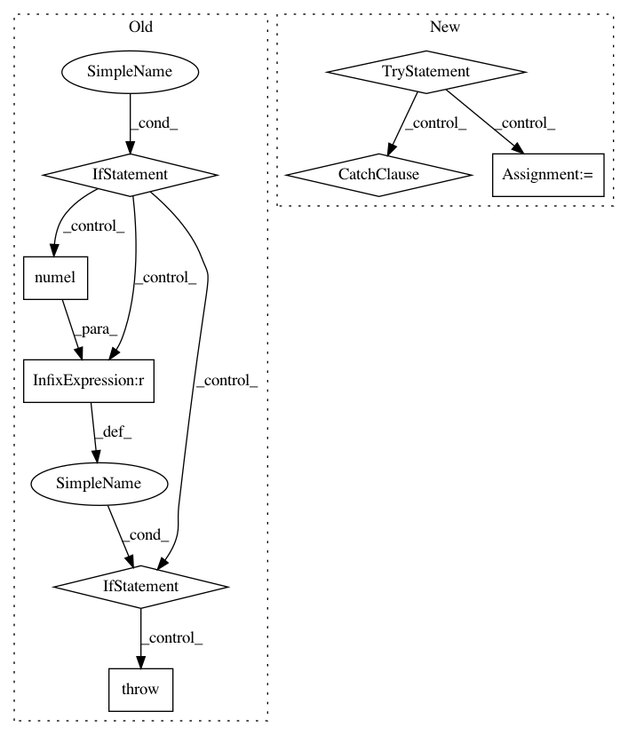

d71bc3c8b533c319e49cf6b347d13c48c925ea93,gpytorch/utils/getitem.py,,_compute_getitem_size,#Any#Any#,10
Before Change
continuous_tensor_index = False
else:
if settings.debug.on():
if idx.numel() != tensor_idx_shape:
raise IndexError(
"index element {} is an invalid size: expected tensor indices of size {}, got "
"{}.".format(i, tensor_idx_shape, idx.numel())
)
// If we don"t have a continuous set of tensor indices, then the tensor indexed part
// goes to the front
if not continuous_tensor_index:
del final_shape[first_tensor_idx]
final_shape.insert(0, tensor_idx_shape)
After Change
// If we don"t have a continuous set of tensor indices, then the tensor indexed part
// goes to the front
else:
try:
tensor_idx_shape = _mul_broadcast_shape(tensor_idx_shape, idx.shape)
except RuntimeError:
raise IndexError("Incompatible tensor indices in index - got shapes of {} .".format(
[idx.shape for idx in indices if torch.is_tensor(idx)]
))
if slice_after_tensor_idx:
tensor_idx = 0
// If we don"t have a continuous set of tensor indices, then the tensor indexed part
In pattern: SUPERPATTERN
Frequency: 3
Non-data size: 8
Instances
Project Name: cornellius-gp/gpytorch
Commit Name: d71bc3c8b533c319e49cf6b347d13c48c925ea93
Time: 2019-03-18
Author: gpleiss@gmail.com
File Name: gpytorch/utils/getitem.py
Class Name:
Method Name: _compute_getitem_size
Project Name: cornellius-gp/gpytorch
Commit Name: b2951813547426828d313a80c52de8a619e99731
Time: 2018-11-26
Author: gpleiss@gmail.com
File Name: gpytorch/lazy/constant_mul_lazy_tensor.py
Class Name: ConstantMulLazyTensor
Method Name: __init__
Project Name: cornellius-gp/gpytorch
Commit Name: 43c471faef2844c4d95636e888018239ab4ea6a9
Time: 2020-07-29
Author: gardner.jake@gmail.com
File Name: gpytorch/lazy/lazy_tensor.py
Class Name: LazyTensor
Method Name: inv_quad